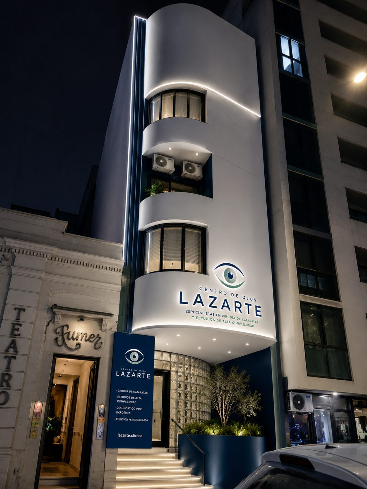
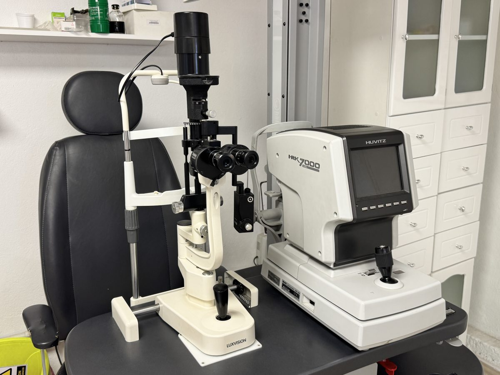
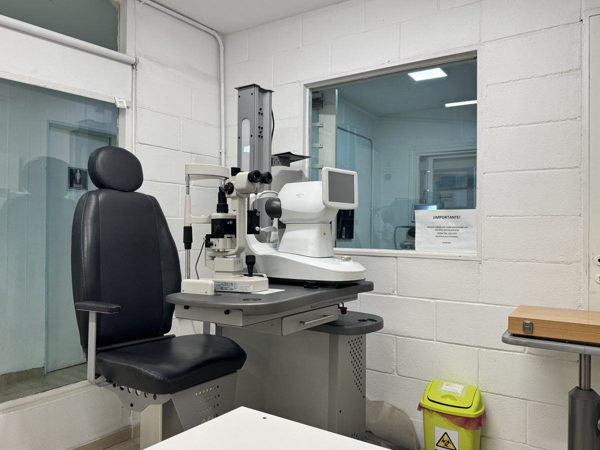
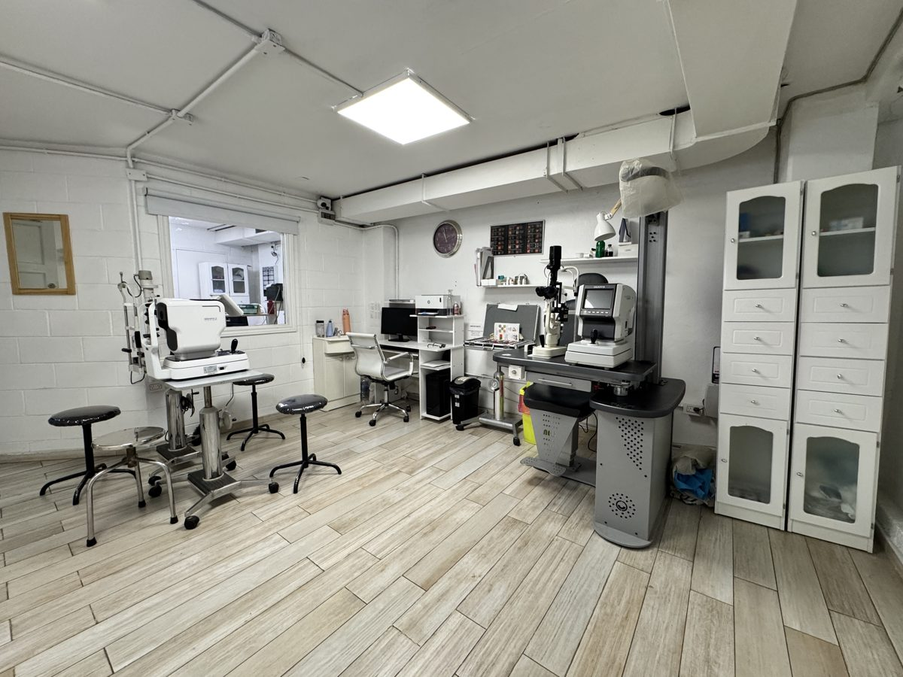
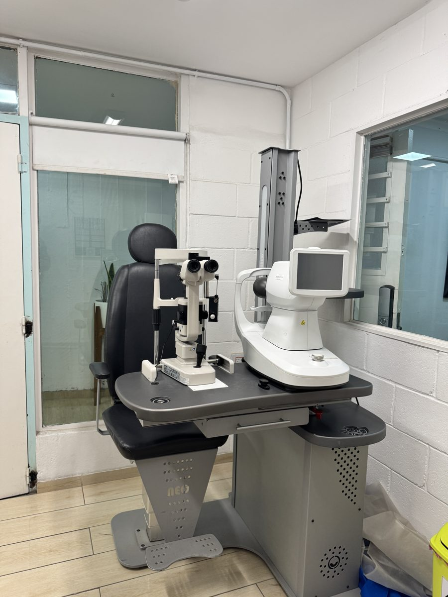
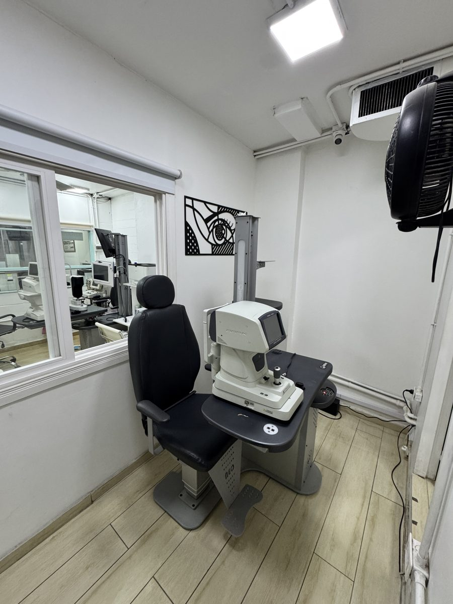
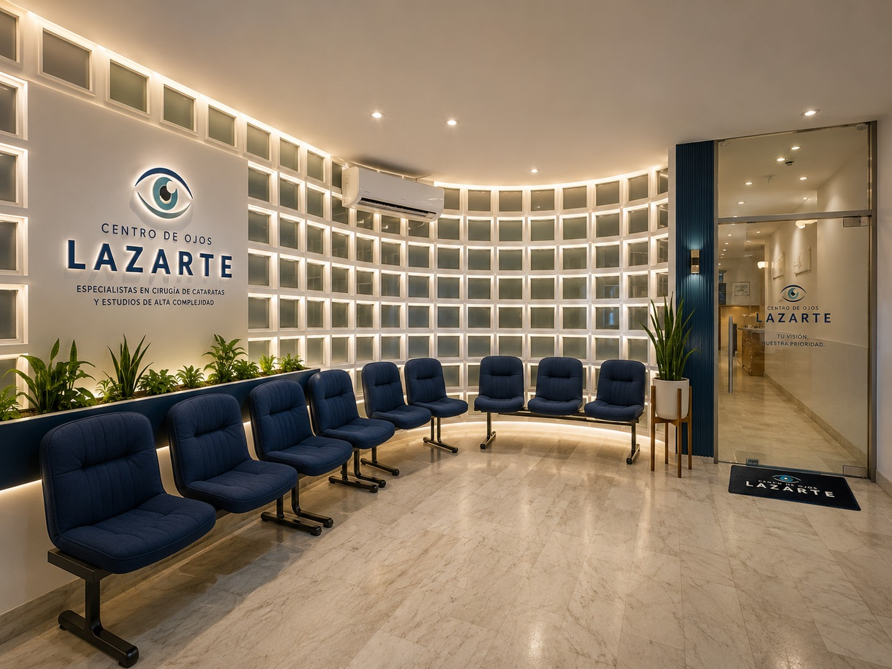
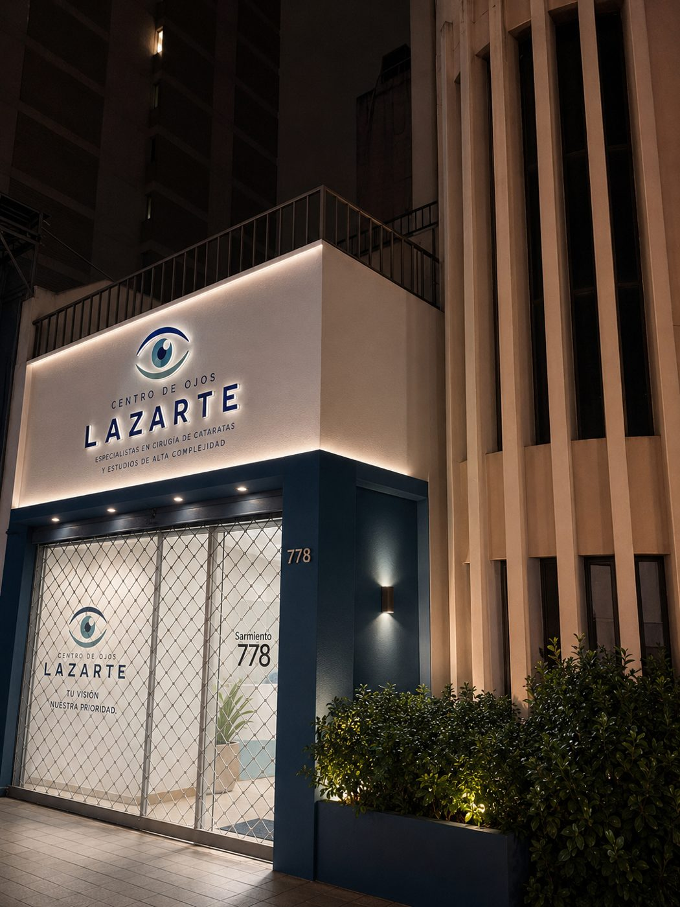

Especialistas en cirugía de cataratas, diagnóstico avanzado y microcirugía ocular. Dos sedes en Córdoba Capital.







Espacios modernos, equipados con tecnología de diagnóstico avanzada y diseñados para que tu experiencia sea confortable desde el primer momento.
Tomografía de coherencia óptica de retina y nervio óptico
Evaluación del campo visual para glaucoma
Mapeo de la superficie de la córnea
Cálculo de lente intraocular pre-quirúrgico
Evaluación de estructuras internas del ojo
Fotografía del fondo de ojo
Sabemos que una cirugía ocular es una decisión importante. Consultá por los planes de financiación disponibles para que puedas acceder al tratamiento que necesitás.
Consultar planes financierosNuestro equipo está formado por especialistas en cada área de la oftalmología, con décadas de experiencia clínica y quirúrgica.
Conocer al equipo →"Excelente atención desde el primer momento. El equipo fue muy amable, resolvió todas mis dudas y el resultado superó mis expectativas. Muy recomendable."

9 de Julio 778, Córdoba Capital
Lun–Vie 9:00–19:30 · Sáb 9:00–13:00
Cómo llegar